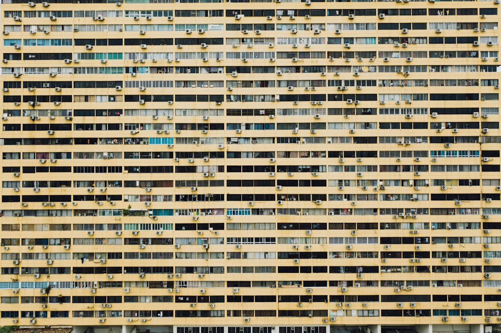
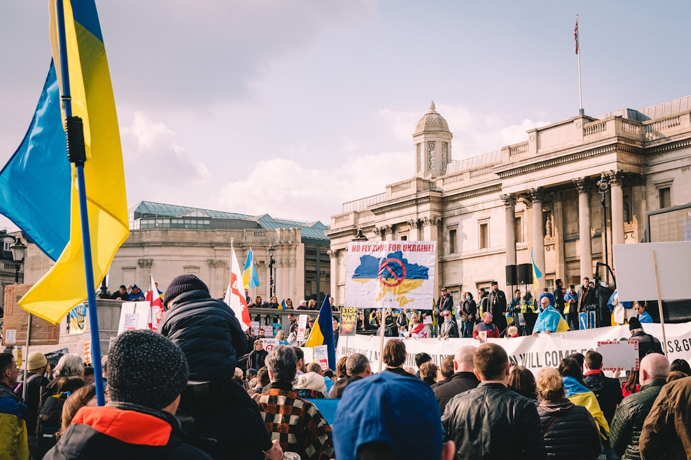

**The Illusion of Freedom: How Capitalism Warps the American Dream**
 **The Illusion of Freedom: How Capitalism Warps the American Dream** In the land of the so-called "free," where the rhetoric of liberty soars higher than the tangible reality, we find ourselves entrapped in a system that celebrates the individual while shackling the collective. The American Dream, a catchy phrase that promises prosperity and happiness through hard work and determination, has become little more than a cruel joke—a mirage that is increasingly out of reach for millions. It’s time we peel back the facade and expose the chilling consequences of capitalism, particularly in the wake of the pandemic that laid bare the deep fault lines of our societal structure. The stark truth is that the majority of wealth in this country is concentrated in the hands of a privileged few. According to reports, the top 1% of Americans hold more wealth than the bottom 90% combined. This radical inequality isn't just a statistic—it's the manufactured outcome of a system designed to perpetuate class divisions. The notion that anyone can ascend to the top through perseverance is an insult to those who are working multiple jobs, both to make ends meet and to support their families, often in treacherous conditions. While the rich accumulate their riches, the rest of us are left fighting for scraps. The COVID-19 pandemic illustrated this harsh reality vividly. While big corporations like Amazon and Walmart raked in unprecedented profits and their owners celebrated billion-dollar increases in their fortunes, millions of everyday workers found themselves furloughed, laid off, or forced into unsafe working conditions with little to no pandemic protections. Small businesses, often the lifeblood of their communities, crumbled under the weight of corporate monopolies, leaving behind only a graveyard of hollow storefronts and shattered dreams. Yet, amidst this chaos, the corporate class continues to play the victim, whining about regulations and taxes while lobbying for massive bailouts and tax breaks. The hypocrisy is astounding: they profit from public infrastructure and government subsidies but balk at contributing their fair share to the society from which they extract so much. They’ve managed to convince us, through a well-oiled propaganda machine, that taxation is theft, while simultaneously reaping the benefits of all that governmental support. How distorted is this sense of justice? Moreover, we must confront the omnipresent specter of consumerism that has blinded us to the injustices occurring right under our noses. Advertisements bombard us with the notion that fulfillment can be found in a new car or the latest smartphone. In this cycle of consumption, we have traded our time for shiny distractions, forgetting our unity as workers. Solidarity is fragmented as the capitalist machine feeds us individualism, encouraging a dog-eat-dog mentality to distract us from our shared struggles. The myth of meritocracy is another layer of this deception, perpetuating the idea that success is solely the result of one's hard work and talent. This narrative conveniently overlooks race, gender, and socioeconomic background's impact on opportunities. Institutional barriers keep marginalized communities from accessing quality education, healthcare, and even stable housing. The recent gig economy explosion, marketed as freedom and flexibility, is nothing but a facade that further exploits precarious workers—no benefits, no security, just instability dressed as opportunity. And let us not forget the environment, ravaged by the insatiable appetite for profit. Climate change is the result of capitalist greed, with corporations prioritizing quarterly earnings over sustainable practices. Our planet suffers, and the people who contribute the least to this crisis—often marginalized communities—are the first to feel its impacts. The focus on renewable energy must challenge the status quo, demanding that those who have profited from fossil fuels face accountability. But here’s the kicker: the oppressed are rising, and the tide is turning. From workers walking out of their jobs in demand for fair wages and safe working conditions to movements advocating for climate justice and racial equity, a reawakening is underway. The struggle to dismantle a system that prioritizes profit over people is gaining momentum. When we realize that our power lies collectively as a united front of workers, not in competitions for scraps, we can begin to reclaim our dignity and freedom. As we navigate this tumultuous landscape, we must take cues from the labor movements of the past. The fights we face today are echoed in struggles for civil rights, women's rights, and LGBTQ+ liberation. When workers unite,
Updated 2025-08-03 08:58 UTC